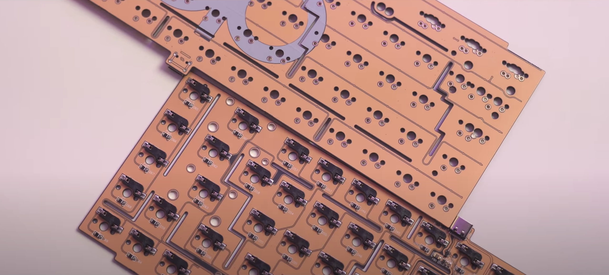

What's inside a keyboard?
There are six main components inside a keyboard.
Keyboard Case
Keyboard case is the components which store all the other parts and mostly decide the appearance of the board. The custom case is primarily made of metal such as aluminum, brass or even stainless steel. There are also acrylic, resin, polycarbonate, carbon fiber, and wooden case, etc...
PCB
 A circuit board acts as the brain of the keyboard since the component receives the signal from the switches and response to whatever terminal devices that you use. It also manages other functions such as LED RGB, macro, and bluetooth, etc... There are two type of PCB: Soldered PCB requires soldering switches whereas hotswapable PCB allow you to instal the switches and use the keyboard immediately without any soldering works.
Plate
 Plate serves multiple functions of the keyboard. It helps secure switches on the PCB and keep them straight. Also, plate provides an avanue to secure and mount the PCB to the case. There are tons of plate materials such as aluminum, brass, copper, stainless steel, arcylic, FR4, POM, and polycarbonate, etc...
Plate serves multiple functions of the keyboard. It helps secure switches on the PCB and keep them straight. Also, plate provides an avanue to secure and mount the PCB to the case. There are tons of plate materials such as aluminum, brass, copper, stainless steel, arcylic, FR4, POM, and polycarbonate, etc...
Stabilizers
Stabilizers or the stabs secures the long keycaps. An alpha keycaps such as letter "a" is counted as one unit; therefore, any keycaps that are double the size required stabs to avoid wobbling or seesawing. There are two types of stabs: PCB screw in mount and plate mount.
Switches
There are ton and ton of switches out there on the keyboard market. However, they are categorized into three types: linear, tactile and clicky. Linear switches require uniform increasing force to bottom out which do not have any pump or click to let you know when it is actuated. Tactile switches have a tactile travel when pressedl; meaning they have pump to signal when it is registered. Clicky switches are known as "gamer switches" which generate an audiable clicky sound when pressed.
Keycaps
Keycaps are the final dressing to a keyboard. Majority of keycaps are made of ABS (Acrylonitrile Butadiene Styrene) and PBT (Polybutylene Terephthalate). ABS keycaps tend to shine quicker than PBT; however, it does not mean that PBT is better than ABS. Choose what you like for the final touch of your keyboard.
Modding
In order to achive a better typing experience and sound, modding is required. Lubing switches and tuning stabilizers are the two least mods that will significantly improve sounding and typing experience. Nowadays, people like to use PCB foam or case foam to dampen the sound and hollowness of the keyboard.